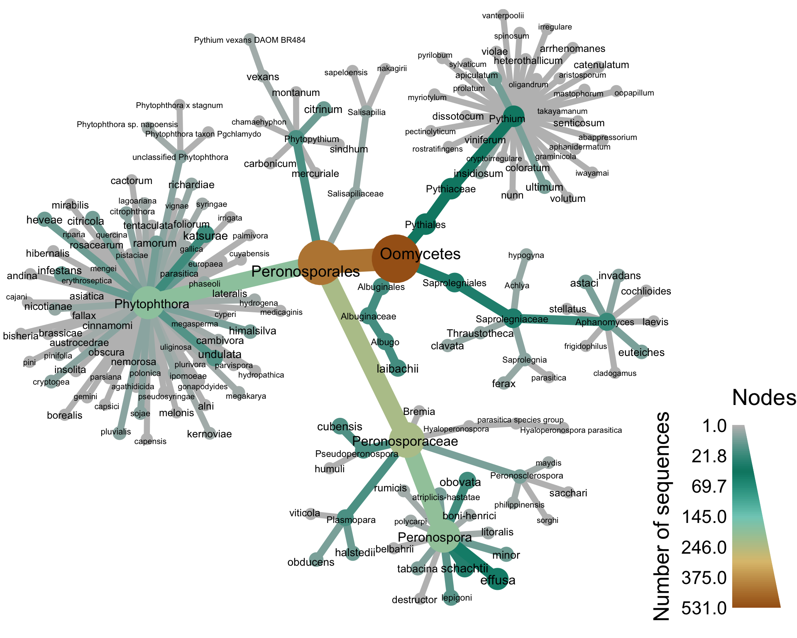

Rps10, a barcode with high specificity and sensitivity for oomycetes
This site provides basic data analysis tools that allow users to find regions of similarity between a query rps10 sequence and a curated oomycete rps10 database. The following heat-tree provides a diagrammatic summary of both the specific oomycetes currently in the database and their amounts.

Current coverage of species per genus in the oomycetes
| Genus | Number of species | Number of sequences |
|---|---|---|
| Phytophthora | 75 | 187 |
| Pythium | 32 | 45 |
| Peronospora | 13 | 195 |
| Phytopythium | 8 | 15 |
| Plasmopara | 3 | 15 |
| Saprolegnia | 2 | 4 |
| Achlya | 1 | 3 |
| Albugo | 1 | 17 |
| Total | 135 | 481 |
This work is licensed under a Creative Commons Attribution-NonCommercial-ShareAlike 4.0 International License
© Copyright 2018 USDA Agricultural Research Service and the Grunwald Lab
.